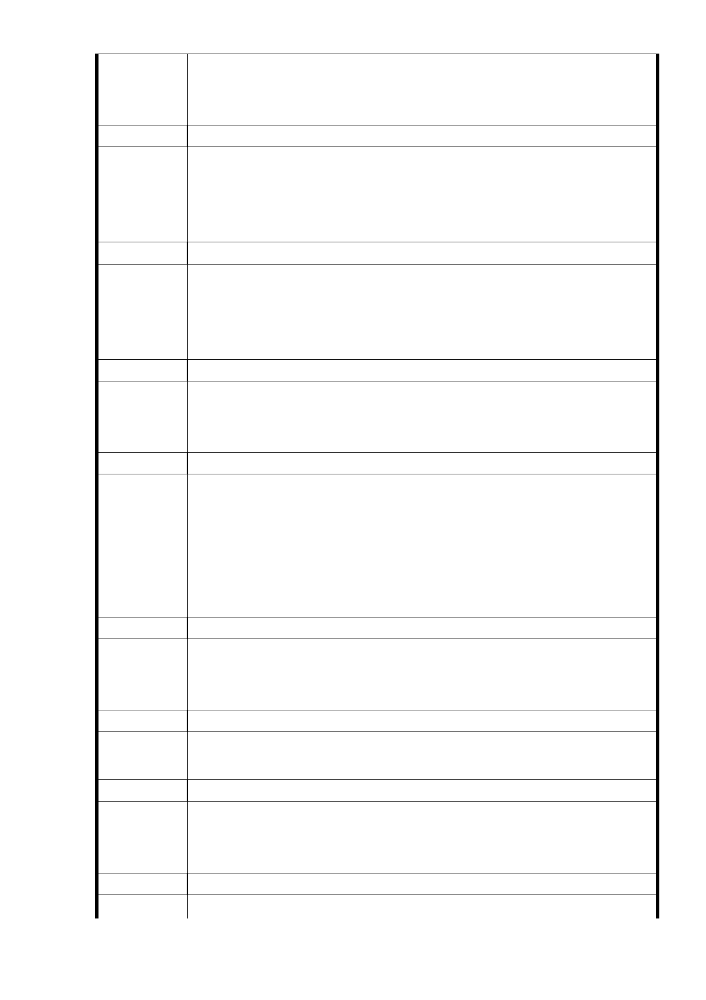

一、擔心提高容積率影響日照權及老樹之保護，另本地之地質及
建議辦法
地震堪慮。
二、本地鄰近學校，設置平宅出入複雜，恐影響學校周邊治安。
發 言 人 市民九
一、廣慈開發大家應該是贊成的，但開發後影響日照權。
建議辦法
二、為何社福用地量體比照機關用地？
三、應於林口街 80 巷退縮 20 公尺以上綠帶，高度比照對側建築
。
發 言 人 市民十
一、設置公營出租住宅後停車位是否足夠，可否讓周邊居民停車
建議辦法
？
二、應先拓寬道路否則如何施工。
三、社福用地與商業區車位是否足夠？
發 言 人 市民十一
一、本地有斷層，恐有大規模地震。
建 議 辦 法 二、高層建築排放之二氣化碳越多，應該規劃公園面積越大越好
，反對蓋大客車停車場。
發 言 人 市民十二
一、設置平宅將影響治安及衛生。
二、應考量周邊區域之整合，如果廣慈容積提高至 400％，周邊
建議辦法
住宅區容積率亦應提高。
三、應設置區民活動中心及圖書館，並維護老樹。
四、反對設置遊覽車停車場。
五、建議比照忠泰賓館模式回饋里民。
發 言 人 市民十三
一、建議與里長及居民溝通，重新檢討土地使用，保存樹木，留
建議辦法
設大面積綠地供居民使用，保留計畫之彈性，共創雙贏。
二、應辦理相關評估報告及環評，並向大家說明。
發 言 人 市民十四
建 議 辦 法 一、建議辦理國際標，爭取好的提案。
二、不應黑箱作業或進行錯誤之規劃。
發 言 人 市民十五
一、地下停車位應與地面建築一起興建。
建 議 辦 法 二、應將福德平宅拆除，並將報廢建築改為停車場，避免成為治
安死角。
發 言 人 市民十六
建 議 辦 法 一、信義區已有許多飯店，為何第三種商業區仍要設置飯店？
- 73 -